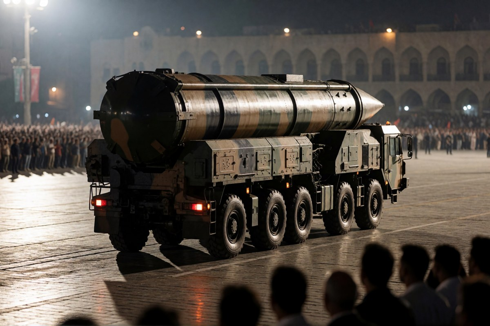

Geopolitica · 15 novembre 2026
Iran, i missili escono dai depositi e vanno in piazza

Lanciatori mobili esposti alla folla a Bandar Abbas e a Teheran, una «città missilistica» sotterranea mostrata dai Pasdaran. Un messaggio con due destinatari, mentre Israele valuta un attacco.
di Franco Zanghì
In Iran i missili escono dai depositi e vanno in piazza, davanti alla gente. Giovedì 12 novembre, a Bandar Abbas, il grande porto sullo Stretto di Hormuz, una folla si è raccolta attorno a un lanciatore mobile con i missili in vista. Lo riferisce l'agenzia indiana AajTak, che parla di missili Zolfaghar, con una gittata di oltre 700 chilometri; altre fonti li indicano invece come Khorramshahr e Khaibar. Le fonti non concordano sul modello, e né il luogo né la data del video sono verificati in modo indipendente: l'esposizione pubblica, però, è coerente con il resto della settimana.
La settimana dell'arsenale
Martedì 10 novembre i Pasdaran hanno presentato quella che chiamano una nuova città missilistica sotterranea: il capo di stato maggiore delle forze armate, Ali Abdollahi, e il comandante della forza aerospaziale dei Pasdaran, Majid Mousavi, hanno passato in rassegna missili e lanciatori. Il Jerusalem Post avverte che il sito non è verificabile e che potrebbe non essere nuovo. Pochi giorni prima il portavoce dei Pasdaran, Hossein Mohebbi, aveva detto che gli impianti di produzione di missili e droni vengono spostati sottoterra. Giovedì, a Teheran, secondo l'emittente indonesiana Metro TV, sono stati esposti missili, droni e difese antiaeree di produzione nazionale, e il missile Khaibar è comparso su un lanciatore mobile in piazza Enghelab.
Le cifre della guerra
La guerra è cominciata il 28 febbraio con i raid americani e israeliani. Secondo le stime di Bloomberg, da allora l'Iran ha lanciato almeno 2.200 missili balistici e più di 4.900 droni Shahed, e ne avrebbe ancora almeno 1.700; prima della guerra, secondo Israele, erano circa 2.500. Sempre secondo l'intelligence occidentale riferita da Bloomberg la produzione sarebbe di circa 50 missili al mese, la metà di prima. Sono cifre da prendere con cautela: nessuna è confermata da fonti indipendenti sul campo.
Il fronte israeliano
Mercoledì 11 novembre la televisione pubblica israeliana Kan ha riferito che il gabinetto di sicurezza avrebbe chiesto all'esercito di prepararsi a un possibile attacco contro l'Iran, e la notizia è stata ripresa dalle altre testate senza conferme ufficiali. Nei giorni successivi il quadro si è però raffreddato: dall'incontro fra Benjamin Netanyahu e il ministro Gadi Eisenkot, riferito dalla stampa israeliana, è emerso che i vertici militari non vedono un'urgenza di attaccare, e le valutazioni riportate dalla stampa araba parlavano di nessuna guerra nelle settimane immediatamente successive, pur in presenza di un consenso di principio a un'operazione. Intanto il capo di stato maggiore Abdollahi, durante la visita alla città missilistica, aveva detto che se il nemico farà un'altra mossa la risposta andrà oltre la regione, senza nominare nessuno.
Il punto
Il messaggio ha due destinatari. Il primo è il popolo iraniano: dopo mesi di guerra, mostrare l'arsenale a pochi metri dalla gente vuol dire che il Paese è stato colpito ma è in piedi. E non tutti, in Iran, la prendono bene: secondo Iran International la presentazione della città missilistica ha irritato chi parla di povertà e di rifugi che mancano. Il secondo destinatario è il mondo, Israele e Stati Uniti. Ma un missile in piazza dice che l'arsenale esiste, non quanto sia efficiente né quanti ordigni restino pronti al lancio. E per noi conta una cosa sola: da Hormuz passa buona parte del petrolio del mondo, e il presidente del Parlamento iraniano, Ghalibaf, ha detto che lo Stretto non tornerà mai com'era prima della guerra.
Fonti
- AajTak, il video del lanciatore mobile a Bandar Abbas, 13 novembre 2026
- Jerusalem Post, la «città missilistica» dei Pasdaran, 10 novembre 2026
- Iran International, le critiche interne alla presentazione dell'arsenale, 10 novembre 2026
- Metro TV, l'esposizione di missili e droni a Teheran, 13 novembre 2026
- Times of Israel con Bloomberg, le stime sull'arsenale iraniano, 11 novembre 2026
- Kan, ripresa dall'agenzia Anadolu, i preparativi dell'esercito israeliano, 11 novembre 2026
- Al Monitor, l'incontro fra Netanyahu ed Eisenkot sull'ipotesi di attacco, 13 novembre 2026
- Al Jazeera, le dichiarazioni di Ghalibaf sullo Stretto di Hormuz, novembre 2026
Le fonti si contraddicono sul modello dei missili esposti a Bandar Abbas: AajTak parla di Zolfaghar, altre fonti di Khorramshahr e Khaibar. Il video non è verificato in modo indipendente e le cifre sull'arsenale sono stime d'intelligence, in aggiornamento alla data di pubblicazione.